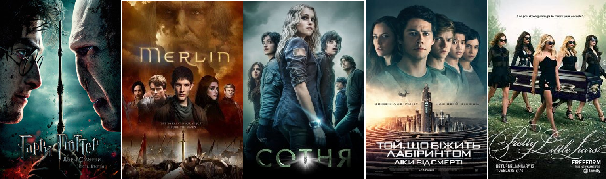

Добрий день! Це мій невеликий сайт про мої улюблені фільми та серіали.
Ось мій топ-5:
- Гаррі Поттер
- Мерлін
- Сотня
- Той, що біжить лабіринтом
- Гарненькі брехухи
На цьому сайті ви знайдете короткі описи кожного з них. Натискайте на меню зверху, щоб перейти до опису кожного фільму чи серіалу.
